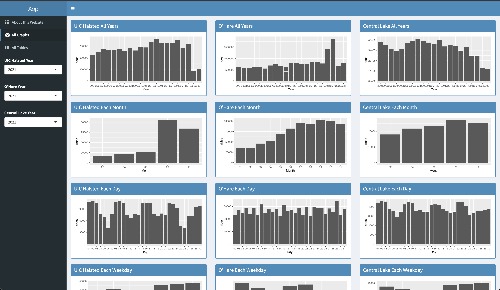
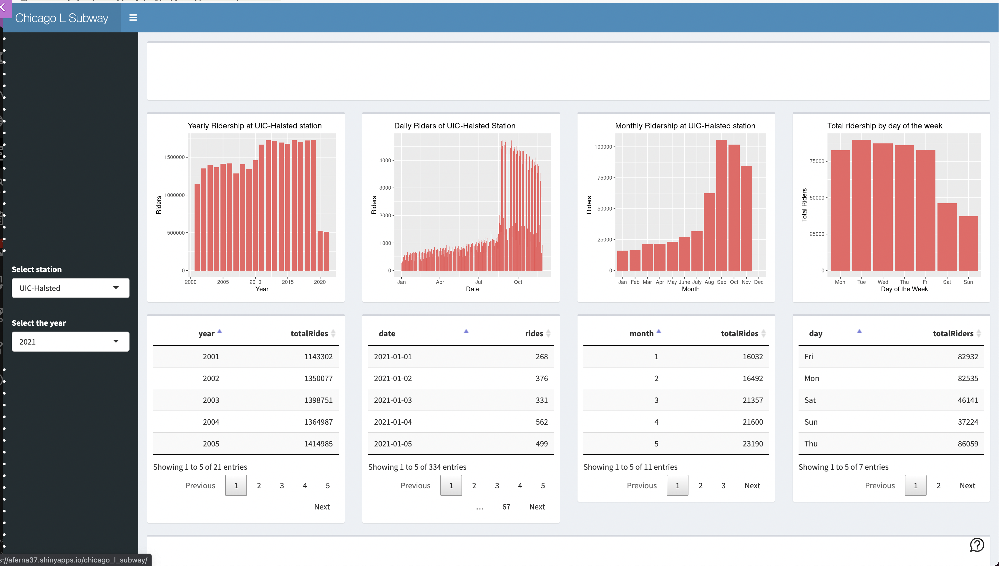
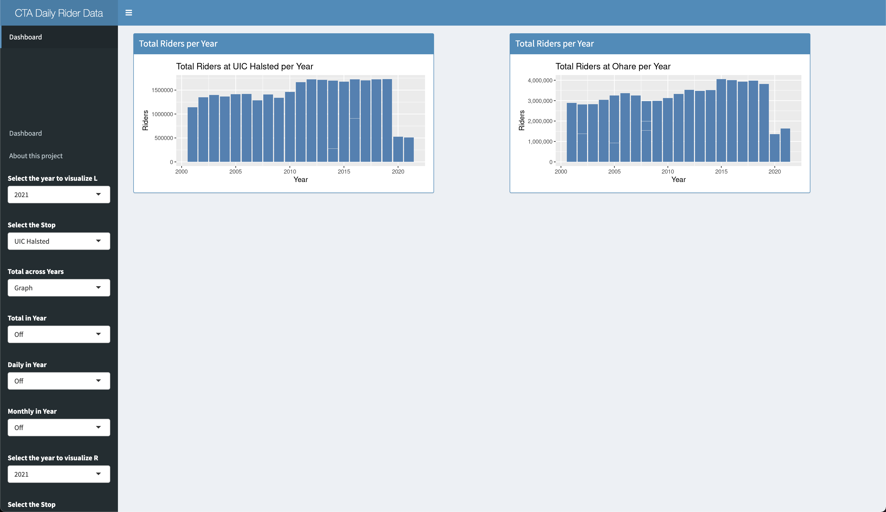
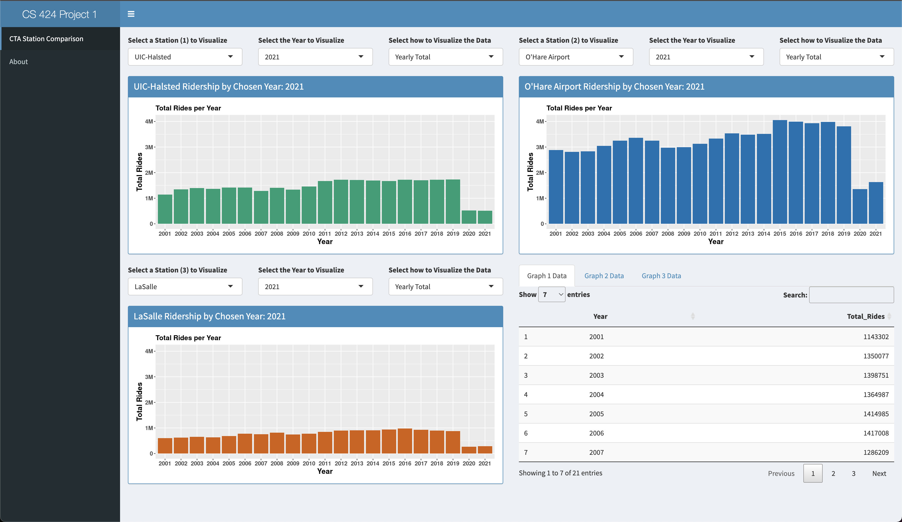

CS 424 Spring 2022
General Information
- Mykyta Parovyi
- 669375239
- mparov2@uic.edu
Projects & Materials
Group Metrics & Selected Solution
-
Mykyta's Solution: Link

- We liked how each station has designated columns adjacent to each other. This makes it easy for users to
look at a
row and have an immediate comparison based on which visualization the user is focusing on (by day, weekday,
month,
or year).
- In addition, having all of the graphs on the page allows users to deal with minimal input, which in this
case, all
they have to do is choose the year that they want for each station.
- Lastly, they separated tables on a separate tab. I think this implementation has its strengths. This allows
users
to focus on either visualization, or data through the tables.
- All tables are in one place and the graphs on their own tab which makes it easier to look at.
The controls are pretty intuitive as they are labeled and it is easy to know which specific set of graphs
should
plot data for the selected year at each station.
- It was also a nice idea to flip the bar chart of daily ridership, since that way it’s easier to see how
ridership
changes throughout the year.
- Most solutions show the ridership data on a horizontal bar chart, but a lot of the
details are lost when done this way, so I think it was a pretty creative way to flip the chart vertically .
- Another positive thing about flipping the bar chart vertically is that generally, vertical space is the
most
common way to expand space on an application.
- Graphing Each Month / Day vertically allows a more conventional
navigation for a user when there are a lot of entries for that data set.
-
Ariadna's Solution:
Link

-
Good segmentation on the fluid page layouts. This gives a uniform look to each station’s visualizations.
-
I also think it’s a good idea that each of the bar graphs is paired with their data table form below. This
allows users
to quickly navigate through specific data if closely examining a specific part of the bar graph.
-
I also think it was a good idea to visualize 2 stations, because realistically, users can probably only
effectively compare 2 sets
of data at a time. In addition, the amount of user input needed is minimal, which makes usability much
simpler.
-
The color palette chosen for each graph was well chosen. The three different colors have enough distinction
where
users will not confuse one for the other.
- It’s also good that each color is assigned to a specific station, rather
than based on visualization type. This allows users to quickly associate a station to a specific color which
aides
them in comparing data between the stations.
-
-
The layout of all the graphs and tables makes comparisons quick and easy, switching stations is placed in a
good
spot.
- Elliot's Solution: Link

-
It’s nice that it has a lot of controls and the user is able to select exactly what it wants to appear on the
screen, which can be useful to avoid the website looking overcrowded.
-
The page is divided into the left and right region which makes it easier to compare different dataset for
different station or for the same station and comparing different yearsand plots, in addition to this, the
individual controls that let make a specific bar chart and table appear and disappear are useful and can be
more
useful, since a user can decided to focus on specific characteristic of the data and isolate only the data
that it
wants plotted or showed as a table.
- I also like how all the controls are out of the way from the space where the
graphs are being shown, and allows for greater space to be used for plotting.
-
What I like about this implementation of the project is that the user has a lot of control on what
visualization
they want to appear on the screen. This allows users to isolate the data they want to see without getting
distracted by other elements of the UI.
- Daniel's Solution: Link

-
It’s nice that everything is in one page, and individual controls for each graph and that the user can choose
which data tables to look at.
-
The colors for each station help with making the data clear where it came from. The
spacing of each station's representative graph makes for a clean layout.
- Swapping years via the UI is quick with
minimal load times making it much easier to draw new comparisons after the initial loading.
- Each graph has a clear
label on top of it that updates as the years change, so it is always clear what data is being displayed.
-
Overall the app provides a very usable and intuitive interface, focusing on a single graph is easy and
bringing in the
others adds to that.
- The table functionality makes it so that you only look at them when specific numbers are
needed and swapping quickly between them provides the whole picture.
- Besides the functionality of these tables
they are also shown in a logical manner where they are sorted by what's relevant, such as years starting at
2001
and not the highest X count.
- The graphs y axis being consistent across the three graphs also makes the comparison
process fluid, O’hares traffic dominates the other two and the initial graphs really show that.
Selected Solution Link
Why?
Because for presentation purposes this solution is the best fit.
It allows people to see the differences between stations much easier and more intuitive than the other ones.